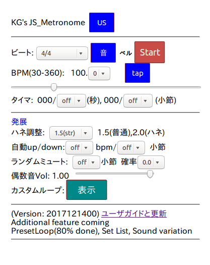

下の画像をクリックしてスタート!
上の「JP」を押して日本語メニューに

|
基本操作 -- ビート、BPM を設定してStartを押す
- ビート選択: 4/4, 6/8, 8/8swing(シャッフル)
などをプリセットのリストから選ぶ
- 音選択: (カウ)ベル/声/両方
- Start/Stop
- BPM(4分音符)はスライダでは1BPM単位、さらにセレクタで0.1単位で設定可能
「タップ」でも設定可能(3秒でリセットされる)
- (減算)タイマ: 秒、または小節で指定
Stopするとタイマは一次停止、Startで続き、
0にするとタイマ無効にできる。
発展(ドラマー向き)
- スイング調整
3連音を0,1,2,0,1,2 として説明を読んでください。
前の音 次の音
0 1.5 2.0 3.0
0----x-----------------------0 (0.5以上1.5未満: スイングの逆)
0-------------x--------------0 ☆ (1.5: ストレート)
0----------------x-----------0 (1.8: 軽いスイング)
16ビートのシャッフルでよくあるちょいハネ練習を想定
0------------------x---------0 ☆ (2.0: (ふつうの)スイング)
0--------------------x-------0 (2.2: 重いスイング)
0-----------------------x----0 (2.5: 極端なスイング)
- (テンポ)自動up/down: -10から10bpmまでを、
1, 2, 4, 8, 12, 16小節単位で自動的にup/down変更
一旦Stopして、bpmまたは小節を0にすると無効にできる
- ランダムミュート:
ミュートする長さを小節で指定(0で無効)、確率を0から1の間で設定する。
注: 休み小節の次は必ず復帰して音が出る。
例えば、1小節休みで確率1の場合、音あり、なしの小節が交互になる。
- 偶数音Vol (頭の音を小さく、3連の場合は2つめまで小さくする)
O: フルボリューム
x: 消去(0.0) or 小さく(0.1))
----------------------
4/4 : x O x O (使わないでしょう)
6/8 : x O x O x O (Wartz style)
8/8 : x O x O x O x O (裏打ちや裏メトロノームでの練習)
12/8: x x O x x O x x O x x O (3連の最後の音に合わせて練習
----------------------
注: このメトロノームでは 12/8 = 8分音符3つ x 4 times が1小節
- カスタムループ: 「表示」を押すとループ編集画面が追加される
(機能確認中)。
|